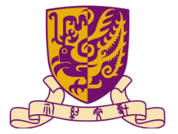
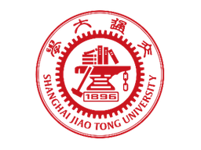
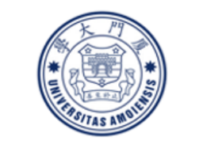
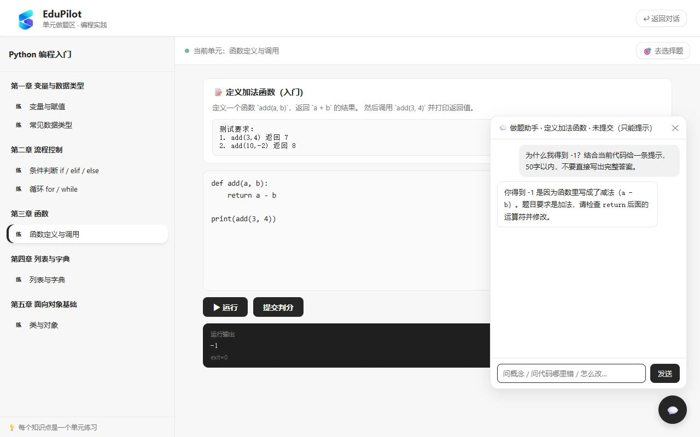
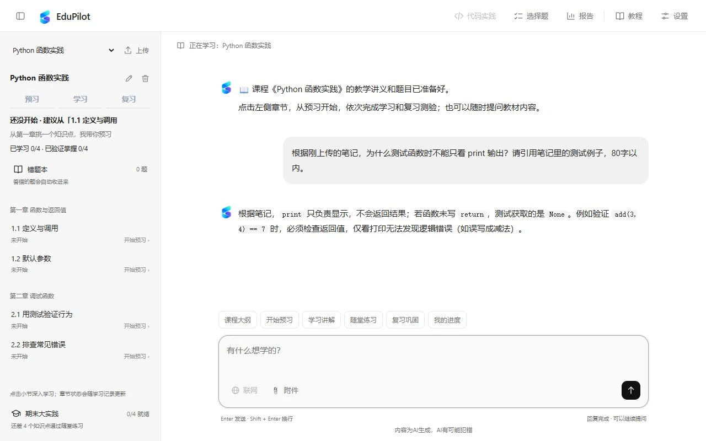
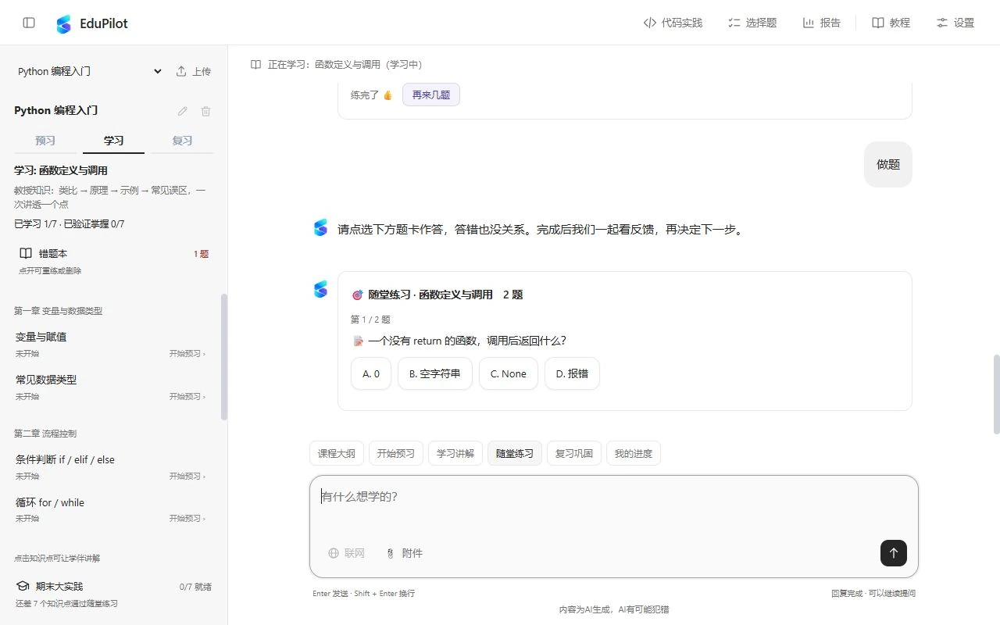
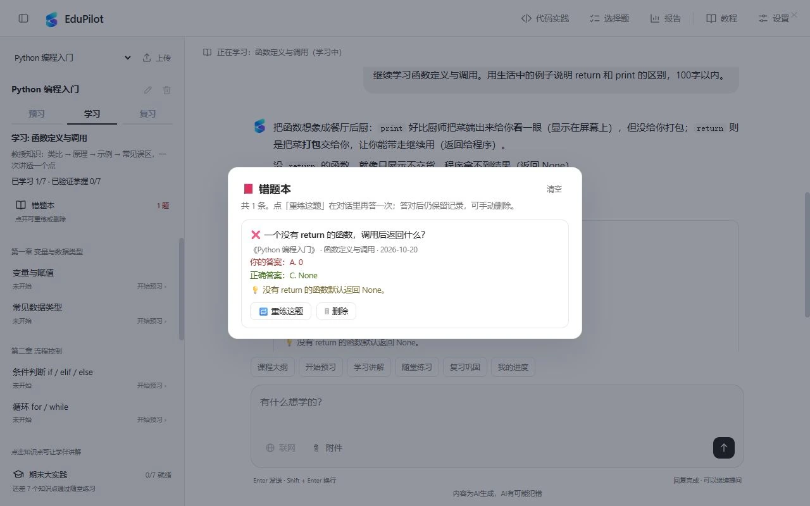
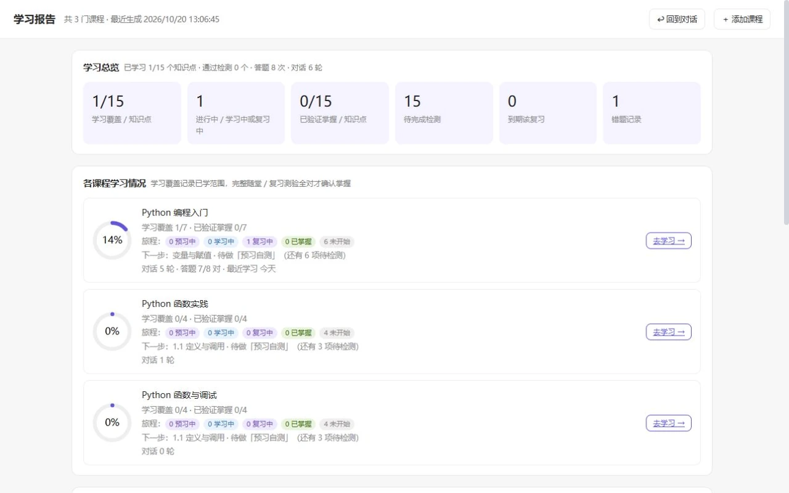

2026.09 — 2028.07 预计
香港中文大学（深圳）

人工智能 · 研究型硕士 MPhil · 在读
人工智能学院 · 关注 Agent 开发与 AI 应用，探索工具调用、检索增强与长期记忆。
Education
2026.09 — 2028.07 预计

人工智能 · 研究型硕士 MPhil · 在读
人工智能学院 · 关注 Agent 开发与 AI 应用，探索工具调用、检索增强与长期记忆。
2026.03 — 2026.06

净零碳燃料课程交换 · Low Carbon-UK College
担任项目组长，获最佳小组展示奖（Distinction）。
2022.09 — 2026.07

新能源科学与工程 · 工学学士（荣誉）
马来西亚分校能源与化工学院 · CGPA 3.53 / 4.00
材料科学基础、微积分、AI 与仿真等课程 A；学年三等奖学金、院长嘉许名单、毕业设计优秀奖。
Selected work
编程教育与科研知识处理，是我目前投入最多的两个方向。
厦门大学校企合作项目 · 面向编程学习的教学 Agent 平台
独立主导需求、Agent 架构与全栈实现，把教材学习、在线 Python 编程、服务端判题与教学反馈串联起来。项目已用于厦门大学信息学院 2 个教学班。
GitHub 仓库对应早期雏形；下方展示校企合作项目持续迭代后的功能。
验证记录2026.10 固定 60 轮合成对话维护测试：维护模型调用由 32 次降至 12 次，减少 62.5%。
真实 API 实录（流程节选），左右滑动查看。

在线 Python 编辑、运行与判题，做题助手结合当前题目和代码给出提示。

上传资料，生成章节、知识点讲义和配套题目，再围绕教材提问。

预习、学习、复习各有路径；在对话中作答，用检测结果推进进度。

保留自己的答案、正确答案和解析，从错题本回到互动题卡重练。

查看学习覆盖、已验证掌握和待完成检测，直接回到课程继续学习。
层状正极科学知识抽取 · 独立负责文本与图像处理
将文献中的合成步骤、实验条件与组合图整理为可追溯的结构化数据，让每条事实、每张子图都能找到原始来源。
用 Python 与 LLM 串联产物、合成、性能与形貌抽取；先锁定完整流程，再补齐实验条件，针对错误样本逐步改进。
清点文献图像，接入候选框检测、人工审核裁图与 PDF 区域补图，把复杂组合图拆成可定位、可复核的子图。
以冻结样本注册表校验来源与缓存身份。100 篇冻结输入的离线重导出中，370 个样本、912 条事实无身份错配；另隔离 1 个待复核样本。
香港中文大学（深圳） · 导师：张明建、李舜宁教授
Research
第一作者 · AI for Science · IOP Publishing
系统回顾 164 篇文献、深入比较 25 篇核心研究，梳理 Transformer 架构、输入特征、跨工况泛化、评测方法与部署约束。配合 NASA、CALCE 数据处理及 Transformer / CNN 模型对照，使用 RMSE、MSE、R² 评估预测误差。
DOI: 10.1088/3050-287X/aeb31bExperience
2025.08 — 2025.09
热仿真工程师 · 动力电池研发中心
独立搭建 COMSOL 动力电池热模型，与 Ansys Fluent 及实验数据对照，误差控制在 ±15%。
2025.03 — 2025.08
性能开发工程师 · 楼宇科技研发中心
基于内部 AI 平台独立搭建图像识别、信息流转、工单创建与归档分析流程，完成节点编排、字段映射及培训，累计覆盖 110+ 人次。
开展竞品拆解、核心零部件与成本分析，形成 40 页结构化报告。
Honors
本科阶段的学习与研究记录。点击证书可查看原图。
2026/04 学期
Dean’s List
厦门大学马来西亚分校
2026/04 学期
Merit Final Year Project II Award
离子凝胶电解质与负极兼容性研究
2026.03 — 06 课程
Distinction · 项目组长
上海交通大学 Net Zero-Carbon Fuels
2025/09 学期
Merit Final Year Project I Award
厦门大学马来西亚分校
2022 — 2023 学年
Distinction Award
厦门大学马来西亚分校
Beyond the screen
材料实验、工程验证，以及工作之外的动手实践。
围绕 UV 固化 AAm / DMAAm–TFSI 离子凝胶，比较盐浓度、固化时间、添加剂和厚度对界面与传输性能的影响；完成 EIS、恒流充放电与 CR2032 半电池测试，评估 Graphite、MCMB、Hard Carbon 与 Silicon 负极适配性。
毕业设计第二阶段题目：Optimization and Anode Compatibility Evaluation of UV-Cured AAm/DMAAm Ionogel Electrolytes for Lithium-Ion Half-Cells。获 Merit Final Year Project II Award。
厦门大学马来西亚分校 · 导师：范能平教授
独立提出可替换图案模块的投影灯设计，基于开源结构模板改造灯体；结合腾讯混元 3D 与 Shapr3D 完成建模和尺寸适配，使用 Bambu Lab X1 Carbon 打印、装配并验证投影效果。
搭建 T 型热电偶与红外测温联合平台，完成 20+ 组实验与 10 万+ 数据清洗分析；参与动态校正模型与实验框架设计，测温精度提升 32%。
厦门大学与福建中烟集团 · 导师：张尧立教授